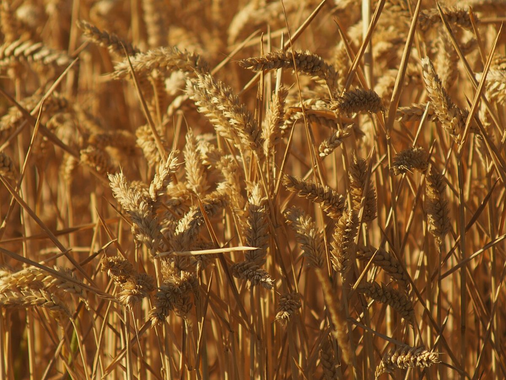

2速
店のこと
お店について確認できているのは、所在地・電話番号・Instagramのアカウントだけです。
確認できていること
- 店名は「浜田ぱん波瑠偉」、業種はパン屋
- 所在地は岡山県岡山市北区吉備津1103-23(〒701-1341)
- 電話番号は080-3130-9625
- Instagramのアカウントがある
- 営業時間・定休日・メニュー・価格・ご予約・駐車場は準備中
お店の特徴・歴史・こだわりは、確認できていないため書いていません。ご提供いただいた内容で書き換えます。

制作側の連想
ギアを一段ずつ
このサイトの見た目は、制作側が「ぱん」から連想した自転車の変速ギアです。お店の理念・由来とは無関係です。実際の写真・文章は、お店のご意向に合わせて差し替えます。
